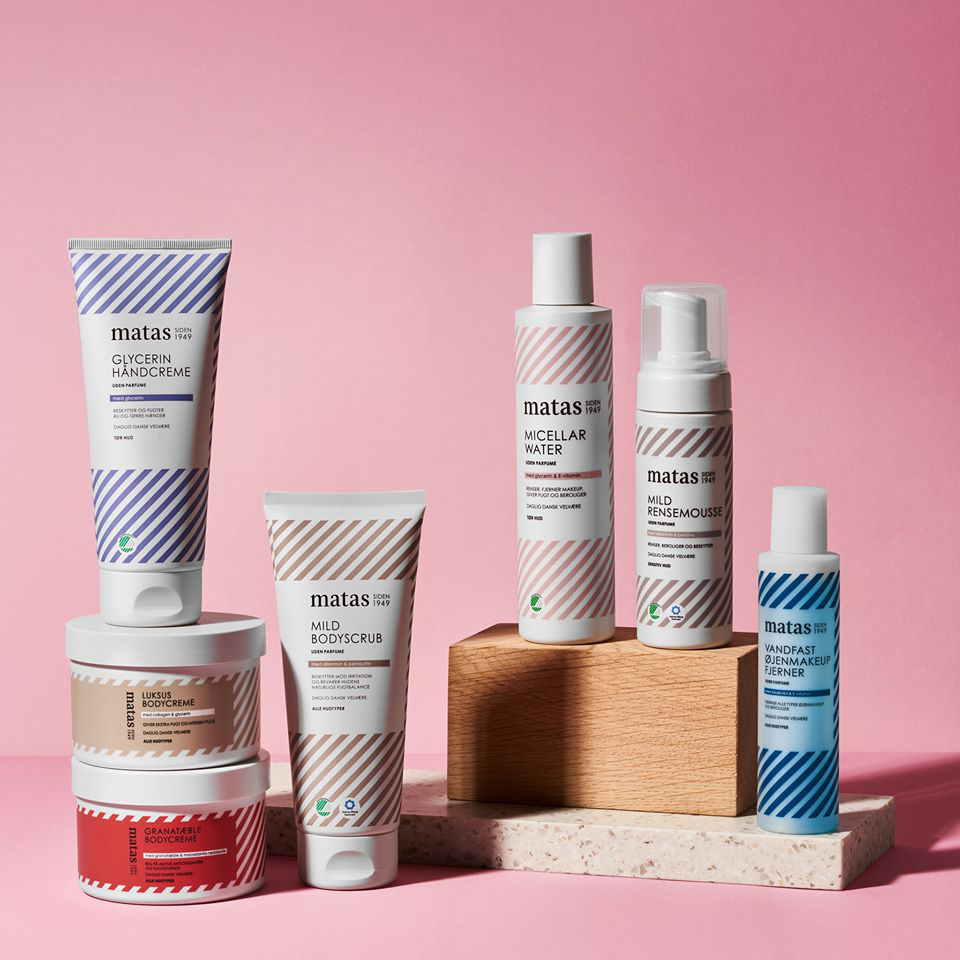
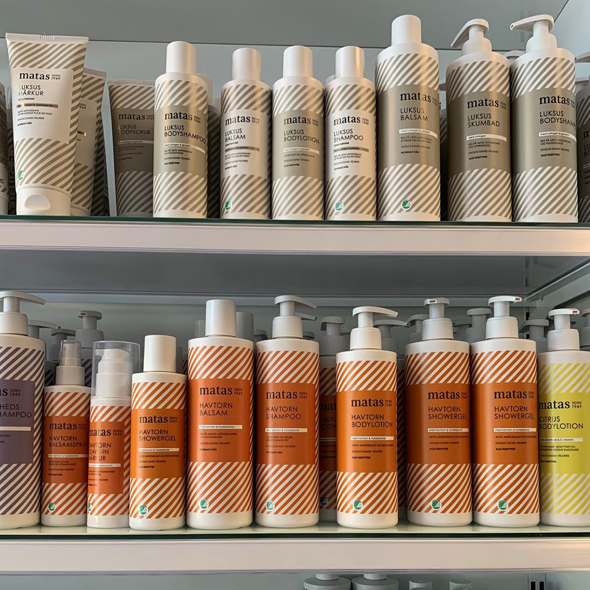

REFILL
Hvad ville du sige til, hvis du kunne komme og fylde dine plastikbøtter op når de er tomme? Og samtidig gøre noget godt for miljøet? Det er nu en realitet - Matas lancerer nu refill på Striber produkterne med emballage produceret af genbrugsplast.


Her vil der i butikkerne være mulighed for at du kan komme ned og fylde dine tomme plastikbøtter op, når de er brugt. Dette er perfekt til dig som elsker lækre produkter, men samtidig også gerne vil være miljøbevidst.
Med Matas appen kan du holde styr på, hvilke produkter du kan genopfylde, og hvor langt der er til den næste fordel, som du kan optjene, jo oftere du genopfylder. Her kan du også se, hvor meget CO2 du har været med til at spare verden for, ved at bruge Matas Refill konceptet.
